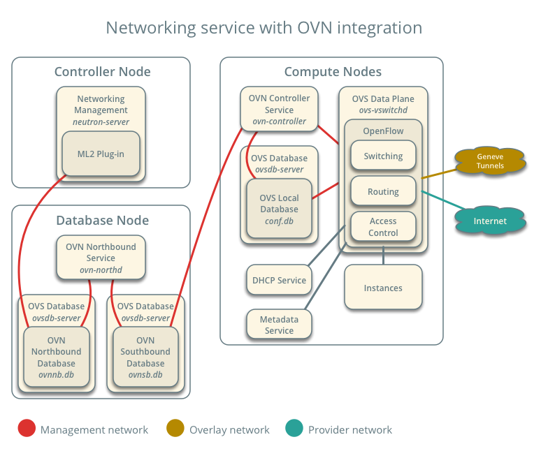

OVN OpenStack
OpenStack networking-ovn 项目为Neutron提供了一个基于ML2的OVN插件，它使用OVN组件代替了各种Neutron的Python agent，也不再使用 RabbitMQ，而是基于OVN数据库进行通信：使用 OVSDB 协议来把用户的配置写在 Northbound DB 里面，ovn-northd 监听到 Northbound DB 配置发生改变，然后把配置翻译到 Southbound DB 里面，ovn-controller 注意到 Southbound DB 数据的变化，然后更新本地的流表。
OVN 里面报文的处理都是通过 OVS OpenFlow 流表来实现的，而在 Neutron 里面二层报文处理是通过 OVS OpenFlow 流表来实现，三层报文处理是通过 Linux TCP/IP 协议栈来实现。
架构
网络节点

而计算节点包括以下服务

实现原理
安全组
OVN 的 security group 每创建一个 neutron port，只需要把 tap port 连到 OVS bridge（默认是 br-int），不用像现在 Neutron 那样创建那么多 network device，大大减少了跳数。更重要的是，OVN 的 security group 是用到了 OVS 的 conntrack 功能，可以直接根据连接状态进行匹配，而不是匹配报文的字段，提高了流表的查找效率，还可以做有状态的防火墙和 NAT。 OVS 的 conntrack 是用 Linux kernel 的 netfilter 来做的，他调用 netfiler userspace netlink API 把来报文送给 Linux kernel 的 netfiler connection tracker 模块进行处理，这个模块给每个连接维护一个连接状态表，记录这个连接的状态，OVS 获取连接状态，Openflow flow 可以 match 这些连接状态。
OVN L3
Neutron 的三层功能主要有路由，SNAT 和 Floating IP（也叫 DNAT），它是通 Linux kernel 的namespace 来实现的，每个路由器对应一个 namespace，利用 Linux TCP/IP 协议栈来做路由转发。OVN 支持原生的三层功能，不需要借助 Linux TCP/IP stack，用OpenFlow 流表来实现路由查找，ARP 查找，TTL 和 MAC 地址的更改。OVN 的路由也是分布式的，路由器在每个计算节点上都有实例，有了 OVN 之后，不需要 Neutron L3 agent 了 和DVR了。

图片来源OpenStack SDN With OVN (Part 2) - Network Engineering Analysis
比如SNAT和DNAT的流表为
# SNAT
table=0 (lr_out_snat), priority=25, match=(ip && ip4.src == 10.0.0.0/24), action=(ct_snat(169.254.0.54);)
# UNSNAT
table=3 (lr_in_unsnat), priority=100, match=(ip && ip4.dst == 169.254.0.54), action=(ct_snat; next;)
# DNAT
table=4 (lr_in_dnat), priority=100, match=(ip && ip4.dst == 169.254.0.52), action=(flags.loopback = 1; ct_dnat(10.0.0.5);)
OVN L2
OVN的L2功能都是基于OpenFlow流表实现的，包括Port Security、Egress ACL、ARP Responder、DHCP、Destiniation Lookup、Ingress ACL等。